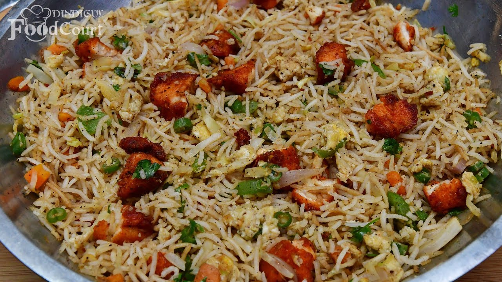

Gallery



Experience the best cuisine in town
Welcome to Food Paradise, where culinary dreams come true! Located in the heart of the city, Food Paradise is a haven for food lovers seeking a delightful dining experience. Our passion for food is matched only by our commitment to providing exceptional service and a warm, inviting atmosphere.
At Food Paradise, we believe in the magic of flavors and the joy of sharing a great meal with loved ones. Our menu is a carefully curated selection of dishes that celebrate both local and international cuisines, crafted with the freshest ingredients and a touch of creativity. From mouthwatering appetizers to indulgent desserts, every bite at Food Paradise is designed to leave you wanting more.
Our team of talented chefs brings years of experience and a deep love for cooking to every dish they create. Whether you're joining us for a casual lunch, a romantic dinner, or a special celebration, you'll find that our dedication to quality and taste is evident in every plate we serve.
We invite you to embark on a culinary journey with us, where each meal is a celebration of flavors, textures, and aromas. Come and discover why Food Paradise is the ultimate destination for food enthusiasts. We look forward to welcoming you and making your dining experience truly unforgettable.
Join us at Food Paradise – your taste of heaven on earth!
"Food Paradise is truly a paradise for food lovers! The dishes are exquisite, and the service is impeccable. Highly recommend!"
- Jane Doe
"The best dining experience I've had in a long time. The ambiance is perfect, and the food is to die for. A must-visit!"
- John Smith
"Absolutely loved the variety and flavors of the dishes. The staff is friendly and attentive. Will definitely come back!"
- Emily Johnson
Get in touch with us 9768435678